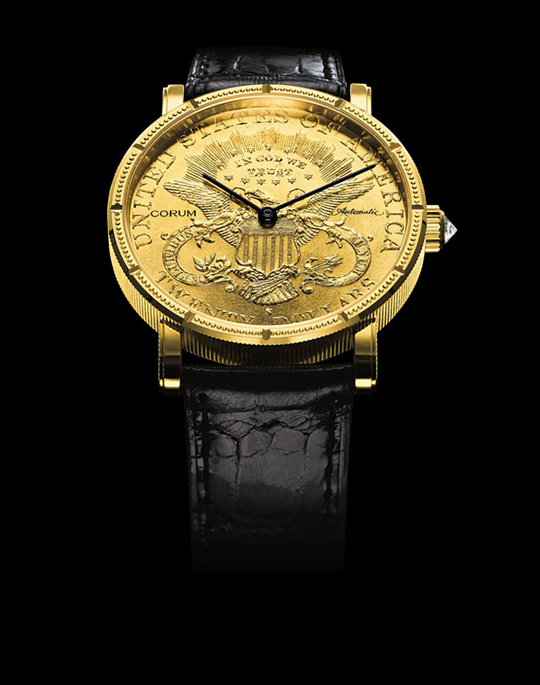

Heritage

The Romvlvs timepiece was created by accident. In 1966, when CORUM received the dials for its new creation Romvlvs in the run-up to the Baselworld show, the hour markers were missing. The supplier had forgotten to add them.René Bannwart, who had founded the company eleven years earlier, decided to go ahead with the Basel launch anyway. As an emergency measure, he had the hour markers engraved directly on the bezel. Thus the Romvlvs was born, and it would go on to become one of the brand’s greatest successes.